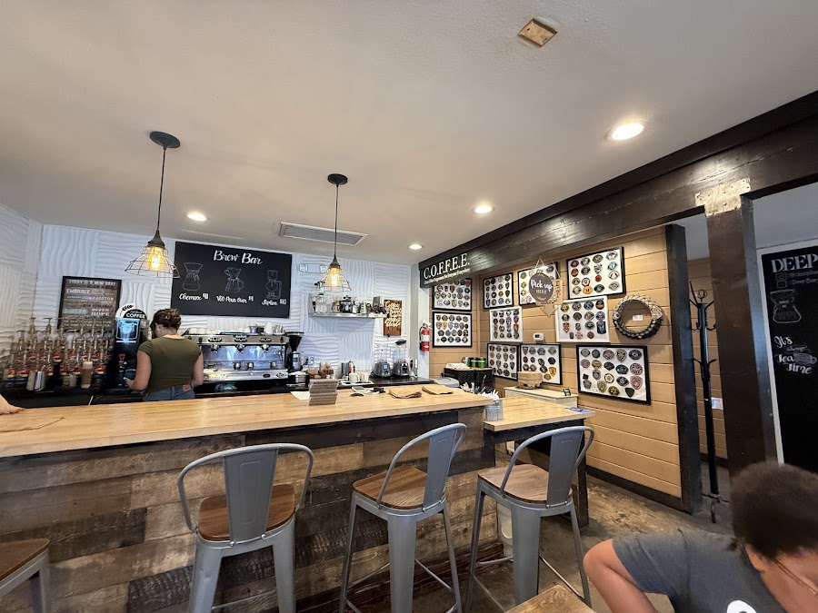
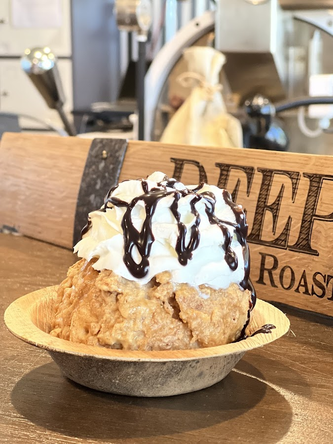
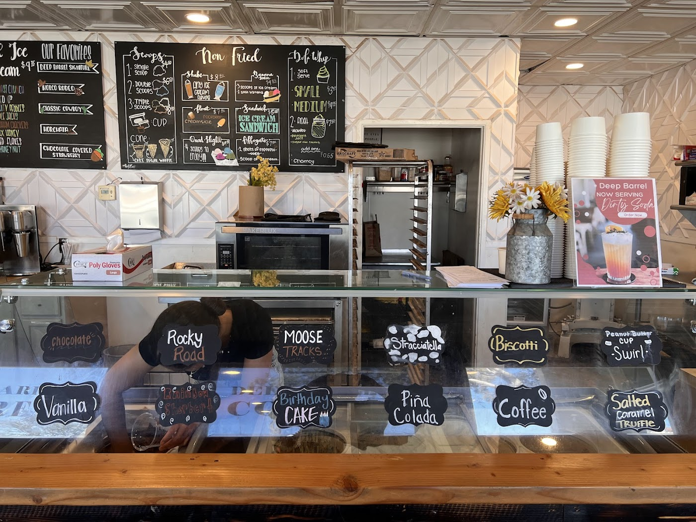
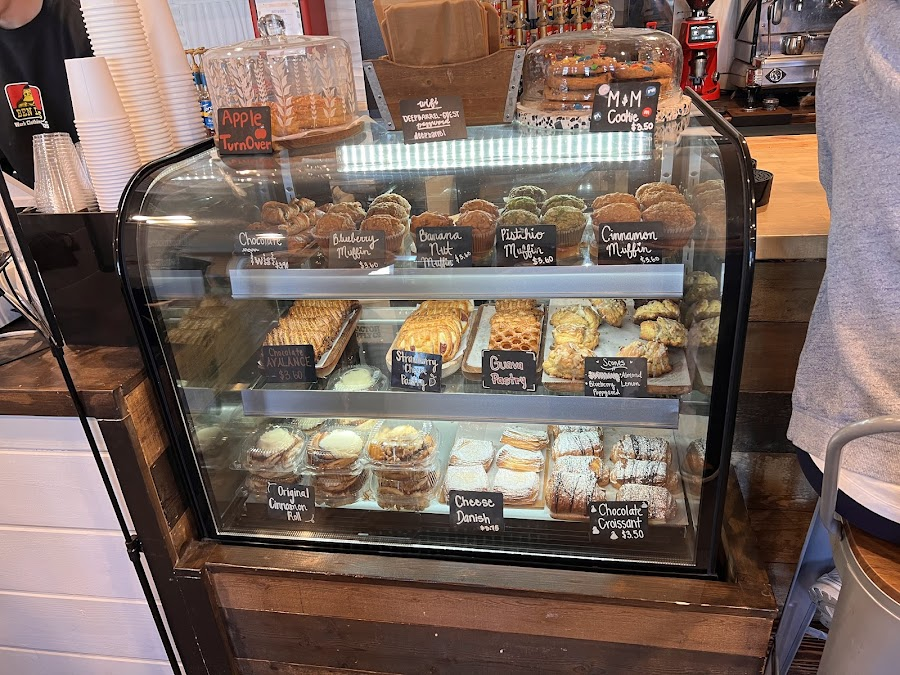
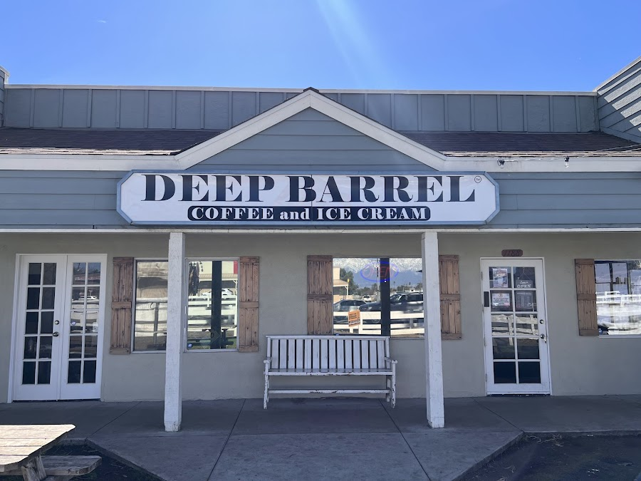

Brewed With Intent,
Scooped With Joy
Deep Barrel started in 2022 with one idea: a neighborhood spot that takes its coffee as seriously as its ice cream.
Walk in and you'll find the brew bar working pour-overs and siphon coffee, a roaster humming behind the counter, and a creamery case stacked with house flavors — from Rocky Road to a Salted Caramel Truffle. The kitchen turns out warm sandwiches and breakfast rolls all day, and the pastry case is restocked before the doors open.
It's small, it's almost always busy, and that's the point. Families, regulars, and first-timers all end up at the same wood bar — the kind of place Norco was missing.

On the Bar
The Brew Bar
The Creamery
The Kitchen
The Roastery Floor




In Their Words
Great experience — even better coffee! I was worried about walking into a place where they just do drip coffee. I was wrong. This place knows exactly how to make great coffee. The sausage and egg rolls were delicious too.
Alex V.
Love love love this independent ice cream shop and coffee shop. We enjoyed the "Norco Cowboy" fried ice cream, chocolate hazelnut, and rainbow sherbet. The staff was friendly — very family atmosphere!
Debra P.
Amazing coffee, great service, and the pastries — the cinnamon rolls are fresh and delicious. They have fried ice cream and great sandwiches. My girl loves this place. Will be coming back very soon.
Daniel P.
Love their coffee and pastries! Not too sweet, kid-friendly, and the coffee aroma is so comforting. Super friendly staff, and even though the shop is small, it's always busy.
Selly M.
Find the Barrel
Deep Barrel
1188 Sixth St
Norco, CA 92860